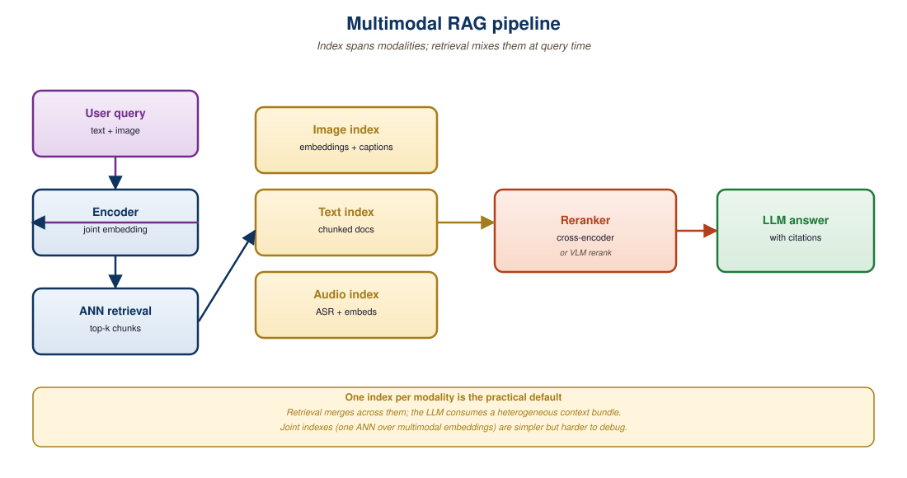
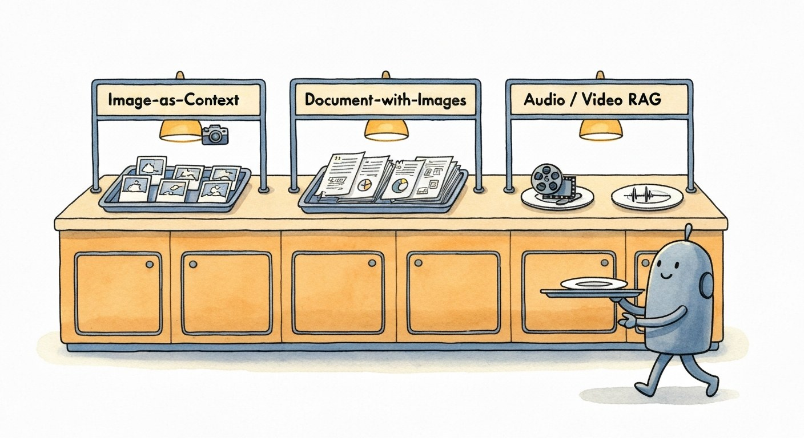

"A text RAG explains an answer from a document. A multimodal RAG explains an answer from a picture."
RAG, Multimodally-Indexed AI Agent
Multimodal RAG extends the retrieval-augmented generation pattern of Chapter 32 to images, audio, and video. The architecture has three pieces: a multimodal retrieval index (built on the joint embedding spaces of Section 33.1), a multimodal LLM (the VLMs from Section 31.1 and the omni models of Section 37.4), and a query orchestrator that decides what to retrieve, how to chunk it, and how to splice it into the generation prompt. This section covers image-as-context patterns, video chunking, audio retrieval, and the production trade-offs (cost, latency, modality interleaving) that make multimodal RAG one of the most-deployed but least-discussed pieces of 2026 production AI.
Prerequisites
This section assumes the unimodal RAG architecture from Section 32.1, the vector-database patterns from Section 32.1, and the multimodal-embedding fundamentals from Section 19.2.

33.2.1 The Three Cuts of Multimodal RAG
Multimodal RAG's most common production failure is also the most banal: the system retrieves the right image, then describes a slightly different image because the VLM's captioner is hallucinating against a similar one from training. Teams chasing this bug usually find it after spending a week tuning embeddings, not minutes tuning prompts.

Lemonade Insurance's 2024 claims pipeline uses all three multimodal-RAG cuts on the same incoming claim. Image-as-context: the customer uploads a smartphone photo of their water-damaged ceiling, the system retrieves the 8 most-similar past photos from a 470,000-image library indexed with SigLIP, and GPT-4o estimates damage severity by comparing them. Document-with-images: the claims system retrieves the customer's policy PDF and the 3 most relevant pages with diagrams of covered scenarios, then Claude 3.5 Sonnet checks coverage against the highlighted text. Audio-or-video: the customer's 90-second video walk-through is chunked into 5-second segments via Whisper-Large-v3, the segments are indexed with CLAP audio embeddings, and the agent retrieves the moment where the customer says "the leak started after the storm last Tuesday" to confirm the timeline. Three retrieval indexes, three different chunkers, three different prompts, one $4,200 claim approved in 47 seconds. This is the "three cuts" abstraction made tangible: not three competing patterns, but three layers of the same pipeline.
"Multimodal RAG" is an umbrella term for three distinct retrieval patterns:
- Image-as-context: text query retrieves relevant images; the VLM answers the question using those images as visual context. Use case: "Find me product reviews of cameras that look like this picture" or "Which of these screenshots shows an error?"
- Document-with-images RAG: a corpus of mixed text and image documents (PDFs, slide decks, web pages). Retrieval returns pages or sections; the VLM reasons over the multimodal content. Use case: technical document Q&A, financial report analysis. Closely related to Chapter 21's document understanding.
- Audio or video RAG: a corpus of audio or video clips. Retrieval returns time-aligned segments; the generation model summarizes, answers, or transcribes. Use case: lecture search, podcast Q&A, video clip retrieval for editorial work.
Each pattern has different chunking, embedding, and prompt-engineering needs, but all share the basic flow: encode-the-corpus, embed-the-query, retrieve-top-k, prompt-the-VLM.
33.2.2 Image-as-Context Pattern
The simplest multimodal RAG: a text query retrieves images, and a VLM uses the retrieved images as visual context. The flow:
- Encode all images with SigLIP 2 (or your chosen joint embedding model from Section 33.1). Store in a vector database.
- At query time, encode the text query, retrieve top-$k$ images.
- Pass the images plus the original query to a VLM (GPT-4o, Gemini 2.5 Pro, Qwen2-VL).
- The VLM produces an answer grounded in the retrieved visual context.
# Image-as-context multimodal RAG: SigLIP for retrieval,
# GPT-4o-mini for grounded generation.
from openai import OpenAI
import base64, qdrant_client
qd = qdrant_client.QdrantClient(url=QDRANT_URL)
oai = OpenAI()
def multimodal_rag(query, k=5):
# 1. Encode the text query into the joint space.
q_emb = encode_text_siglip([query])[0]
# 2. Retrieve top-k images from Qdrant.
hits = qd.search(
collection_name="images",
query_vector=q_emb.tolist(),
limit=k,
)
image_payloads = [h.payload["path"] for h in hits]
# 3. Build a multimodal prompt for the VLM.
content = [{"type": "text",
"text": f"Answer using ONLY these {k} images. {query}"}]
for path in image_payloads:
with open(path, "rb") as f:
b64 = base64.b64encode(f.read()).decode()
content.append({
"type": "image_url",
"image_url": {"url": f"data:image/jpeg;base64,{b64}",
"detail": "high"},
})
# 4. Generate the grounded answer.
response = oai.chat.completions.create(
model="gpt-4o-mini",
messages=[{"role": "user", "content": content}],
max_tokens=400,
)
return response.choices[0].message.content, image_payloads"detail": "high" mode increases image tokens by ~6x but is necessary for fine-grained visual content.Why not just pass all your images to the VLM and let it figure out which are relevant? Cost and quality. A 1024x1024 image at "high" detail consumes ~1100 tokens. A 100-image corpus is 110,000 input tokens per query, $0.5 per request at GPT-4o pricing. With retrieval, you pass 5 to 10 images per query for ~$0.025, a 20x cost saving with comparable quality. The retrieval-then-VLM pattern is the multimodal analog of classical text RAG: cheap retrieval over expensive context.
33.2.3 Document-with-Images RAG
Real-world documents (PDFs, slide decks, technical manuals) interleave text, figures, charts, and tables. A naive approach extracts only text and ignores images, losing critical information. A better approach indexes both text chunks and visual elements, then retrieves jointly.
Three patterns dominate in 2026:
- Page-as-image RAG (ColPali / ColQwen): encode each PDF page as an image with a vision-language model. Skip OCR entirely. ColPali (Faysse et al., 2024) uses PaliGemma to produce multi-vector page representations; ColQwen uses Qwen2-VL. Query-time retrieval matches the text query against page vectors with late interaction (a la ColBERT). State-of-the-art for technical document QA in 2026.
- Hybrid text + image embedding: extract text chunks via OCR or PDF parsing, also encode each page or figure as an image. Both go into the index with metadata pointers. Retrieval returns the top-k items of either type; the VLM consumes both at generation time.
- VLM-summarized chunks: pre-process each page with a VLM to produce a text summary that captures both textual and visual content. Index the summary; retrieve text-to-text. Generation receives the original page image plus the summary. Used by Anthropic's contextual retrieval and similar systems.
| Pattern | Indexing Cost | Query Quality | Best for |
|---|---|---|---|
| Text-only (ignore images) | Lowest | Poor on figure-heavy docs | Pure text corpora |
| ColPali / ColQwen page-as-image | Medium (VLM per page) | State of the art | Technical PDFs, slide decks |
| Hybrid text + image embedding | Medium | Good | Mixed corpora at scale |
| VLM-summarized chunks | Highest (VLM at index time) | Good | Small to medium corpora |
33.2.4 Video RAG and Chunking Strategies
A video is a temporal sequence of images plus an audio track. The chunking strategy determines what retrieval can find:
Take a 47-minute MLflow conference talk from 2024. Transcript-only RAG (Whisper-large-v3 plus 200-token text chunks indexed with bge-large) answered the query "what command did the speaker run to register the model?" with the wrong timestamp because the speaker said "I will run this command" at 09:12 and then ran the actual command silently at 11:43, with the command name visible only in the terminal capture on screen. Keyframe-only RAG (one frame per 5 seconds embedded with SigLIP) found the right moment (11:43) but could not parse the small terminal text. Hybrid keyframe-plus-transcript RAG retrieved 09:12 from the transcript and 11:43 from the keyframe, then sent both frames plus the surrounding 30 seconds of transcript to GPT-4o, which read the visible command "mlflow models register --name churn-v3 ..." off the keyframe and produced the correct answer. The lesson: each chunking strategy is sensitive to a different signal, so retrieval recall on real video corpora caps at the channel-coverage of your indexer. Hybrid is the production default not because it is cleverer but because it is the only strategy that covers both channels at once.
- Keyframe chunking: extract one frame per N seconds (or per scene change). Index each as an image. Lightweight but loses motion information.
- Clip chunking: split into N-second clips, embed each clip with a video encoder (VideoCLIP, InternVideo). Captures motion; higher storage cost.
- Transcript chunking: ASR the audio track, chunk the transcript, retrieve text-to-text. Misses visual content entirely.
- Hybrid (keyframe + transcript): index both keyframes and aligned transcript segments. Retrieve either type; generation receives the time-aligned segment of both.
For long videos (lectures, podcasts), the hybrid pattern with timestamp alignment is the production default. A 1-hour lecture might produce 60 keyframe vectors plus 200 transcript chunk vectors; total index size is small even for huge video libraries.
# Hybrid video chunking: keyframes at scene boundaries + transcript
# segments. Each chunk has a (start_sec, end_sec) range.
import cv2
from faster_whisper import WhisperModel
whisper = WhisperModel("large-v3", device="cuda")
def chunk_video(video_path):
chunks = []
# 1. Keyframes via scene-change detection
cap = cv2.VideoCapture(video_path)
fps = cap.get(cv2.CAP_PROP_FPS)
prev_hist = None
frame_idx = 0
while True:
ret, frame = cap.read()
if not ret: break
hist = cv2.calcHist([frame], [0,1,2], None,
[8,8,8], [0,256]*3)
if prev_hist is None or \
cv2.compareHist(prev_hist, hist,
cv2.HISTCMP_BHATTACHARYYA) > 0.4:
t = frame_idx / fps
chunks.append({"type": "frame", "time": t, "frame": frame})
prev_hist = hist
frame_idx += 1
# 2. Transcript chunks with timestamps
segments, _ = whisper.transcribe(video_path, word_timestamps=False)
for seg in segments:
chunks.append({
"type": "transcript",
"start": seg.start,
"end": seg.end,
"text": seg.text,
})
return chunks33.2.5 Audio RAG
Pure audio RAG (no video) follows a similar pattern, but with one additional design axis: whether to treat audio as "text after transcription" or as a first-class modality with its own embedding. The right answer almost always depends on what the user is searching for, lexical content vs acoustic phenomena, which sets up the three choices below.
- Transcript-only: Whisper-transcribe the audio, chunk the transcript, retrieve text-to-text. Cheapest and good enough for most podcast/lecture use cases. OpenAI Whisper large-v3 (released November 2023) reaches roughly 6-10% WER on conversational English at $0.006 per minute of audio, which makes transcript-only RAG cost-competitive with text-document RAG once you amortize the one-time transcription pass.
- Acoustic + transcript: embed audio with CLAP or AudioMAE for queries like "find me the part with the audience laughter" that transcripts don't capture. Combine with transcript retrieval via score fusion. Microsoft's 2023 CLAP model (Contrastive Language-Audio Pretraining) embeds 10-second audio clips into a 512-dim space jointly aligned with text; on AudioCaps retrieval it reaches a Recall@10 of about 66%, which is enough to rescue queries the transcript pipeline drops entirely.
- Diarization-aware: include speaker labels in the chunk metadata so the user can filter by speaker. Pyannote's 2024 speaker-diarization pipeline reaches roughly 11% DER (diarization error rate) on the AMI corpus; once paired with Whisper, you can answer queries like "what did the second speaker say about pricing" that pure-transcript retrieval cannot, since Whisper alone collapses all speakers into a single text stream.
For most production audio RAG (call center transcripts, lecture archives), transcript-only retrieval is the right starting point. Add acoustic embeddings only if your use case demands non-linguistic content. Gong.io and Chorus.ai, both 8-figure-ARR conversation-intelligence products as of 2024, run on what is essentially "Whisper plus diarization plus text RAG"; the acoustic-embedding layer is only worth adding when your users start asking the kind of "find the laughter" or "find the angry tone" queries that text cannot serve.
33.2.6 Modality-Aware Reranking
Cross-modal retrieval is noisier than within-modal retrieval. A text-to-image query can return semantically related but spurious matches, the same picture of dogs surfaces for "dog playing" and "dog at the beach". The standard fix is a reranker: a more expensive model (cross-encoder, VLM) scores the top-k retrieved items more carefully.
For image retrieval, a small VLM (Qwen2-VL-2B, Idefics2-8B) reranks by computing a relevance score between the query text and each candidate image. The pattern:
- Joint-embedding retrieval returns top-50 candidates (cheap).
- VLM reranker scores each candidate against the query (medium-cost).
- Top-5 reranked images go to the final generation VLM.
This two-stage retrieve-then-rerank pattern, identical to text RAG (Section 32.1), improves answer quality by 5 to 15 percentage points on most benchmarks at modest extra latency (50 to 200 ms).
ColPali-style late interaction (ColBERT for documents, MaxSim aggregation for page-as-image) is gaining ground over the retrieve-then-rerank pattern. Late interaction stores multiple vectors per item and matches at the token level, giving better precision than single-vector retrieval without requiring a separate reranker. Storage costs are higher (5 to 10x), but for high-precision technical document QA, late interaction is the new state of the art in 2026.
33.2.7 Production Trade-offs: Cost, Latency, Quality
| Pipeline | Index Cost (1M items) | Query Cost | Query Latency p95 | Quality Floor |
|---|---|---|---|---|
| SigLIP retrieval + GPT-4o-mini | ~$200 GPU | ~$0.02 | 1.2 s | Good for general use |
| ColPali + Qwen2-VL-7B | ~$1500 GPU | ~$0.04 | 2.5 s | SOTA for technical docs |
| Hybrid (text + image) + GPT-4o | ~$500 GPU | ~$0.06 | 1.8 s | Best general quality |
| Video keyframe + transcript | ~$300 GPU + ASR | ~$0.03 | 1.5 s | Time-aligned answers |
A 2025 pharma R&D team needed Q&A over a 40,000-page corpus of internal documents heavy with chemical structures, dosing tables, and study charts. Text-only RAG missed 60% of figure-heavy queries. They moved to ColQwen-2.5 with Qwen2-VL-72B for generation. Recall@10 rose from 41% to 88%; the team's literature-review time per query dropped from ~30 minutes to ~2 minutes. Total cost: $4,200 in one-time indexing GPU time plus ~$0.18 per query at production volume of 5000 queries/day.
Multimodal RAG combines joint-embedding retrieval with multimodal LLMs to answer questions grounded in image, audio, and video corpora. Image-as-context is the simplest pattern; ColPali-family page-as-image is the new state of the art for technical document QA; hybrid keyframe-plus-transcript handles video. The retrieve-then-rerank pattern transfers cleanly from text RAG. Pick the pipeline based on the corpus type, the precision requirement, and the cost target. The biggest 2024-2026 shift: OCR is no longer required for technical document QA, native VLM embedding of pages outperforms it.
Show Answer
Show Answer
Show Answer
Show Answer
What Comes Next
Section 33.3: When to Retrieve, When to Reason covers the decision rubric for choosing between RAG and direct multimodal reasoning, with hybrid strategies that combine both.